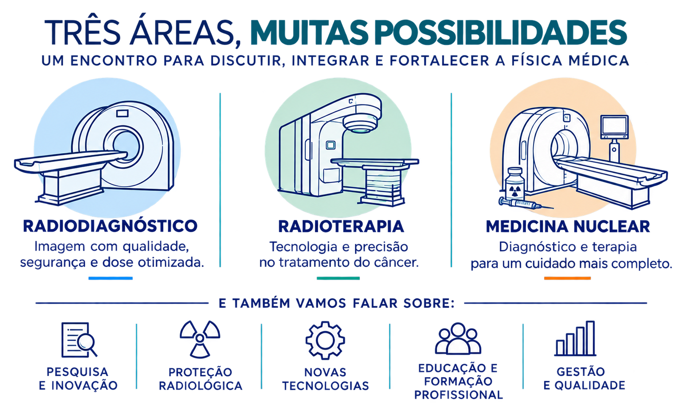
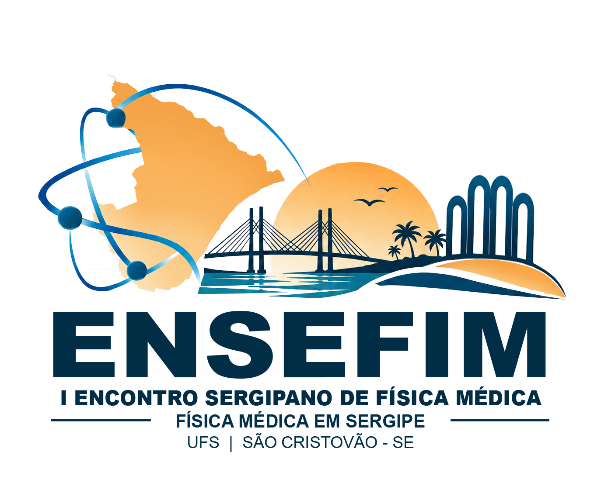

Radiodiagnóstico
Imagens com qualidade, segurança e dose otimizada.


06 — 07 NOV 2026 · UFS

Sobre o encontro
Um espaço para descobrir caminhos na Física Médica.
Ciência, cuidado e futuro se encontram em Sergipe.
O I Encontro Sergipano de Física Médica aproxima estudantes e profissionais para compartilhar experiências e mostrar como a ciência faz diferença na saúde.
Em dois dias de conversas e conexões, vamos explorar áreas de atuação, desafios da profissão e novas possibilidades para quem está construindo seu caminho.
Explore a profissão
Um encontro para discutir, integrar e fortalecer a Física Médica.

Imagens com qualidade, segurança e dose otimizada.
Tecnologia e precisão no tratamento do câncer.
Diagnóstico e terapia para um cuidado mais completo.
Reserve a data
⌖ Universidade Federal de Sergipe
São Cristóvão / SE
Em breve